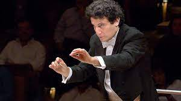

Alain Altinoglu
Alain Altinoglu (born 9 October 1975) is a French conductor of Armenian descent.
Biography
Born in Paris, into an Armenian family who were originally from Istanbul, Altinoglu studied music at the Conservatoire National Supérieur de Musique et de Danse de Paris. After finishing his studies at the Conservatoire, he joined the school's faculty and became director of the conducting class there in 2014.
Alain Altinoglu is one of the first conductors to conduct a production wholly, or partially composed of electronic music. In 2006 he conducted the symphonic orchestra that performed alongside the renowned Techno producer Jeff Mills' landmark recording. This performance is considered as an exceptional performance, wherein classical music and modern electronic music is combined in a rhythmic orchestral performance.
Altinoglu first appeared as a guest conductor with La Monnaie in 2011, conducting a production of Massenet's Cendrillon. In September 2015, La Monnaie announced the appointment of Altinoglu as its next music director, effective January 2016. The appointment with La Monnaie is Altinoglu's first formal post with an opera house. In December 2019, La Monnaie announced the extension of Altinoglu's contract through 2025.
n August 2019, Altinoglu first guest-conducted the hr-Sinfonieorchester. In December 2019, the hr-Sinfonieorchester announced the appointment of Altinoglu as its next chief conductor, effective with the 2021–2022 season, with an initial contract of 3 seasons. This appointment marks Altinoglu's first chief conductorship of a symphony orchestra.
Altinoglu is married to the mezzo-soprano Nora Gubisch. The couple perform in recital together, and have recorded commercially together. Altinoglu has also made other commercial recordings on CD and on DVD, including Pascal Dusapin's Perelà uomo di fumo, Lalo's Fiesque, Honegger's Jeanne d'Arc au bûcher, Massenet's Thérèse, and Dusapin's Perelà.